Sunnyvale Hindu Temple
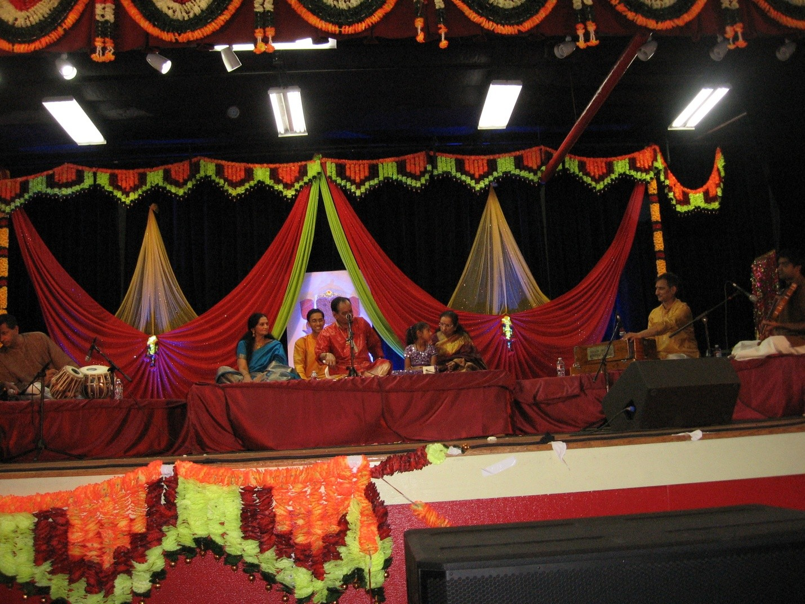
On Saturday evening we visited the Sunnyvale Hindu Temple, about 8 km from home. The temple was clean and housed deities of Ganesh, Ram and Sita, Shiva, Karthikeyan, Lakshmi, Balaji, and Navagraha. Indians donate generously, and apples, oranges, and bananas are distributed as prasad. Evenings often include a meal for devotees, and we were lucky to attend a concert by the renowned musician Balamurali Krishna that day — followed by a delicious dinner. We also visited a nearby Durga temple and the Sai Baba temple, where special pujas are held every Thursday and devotees take turns performing the aarti.
Bus Journey — Exploring by Local Bus
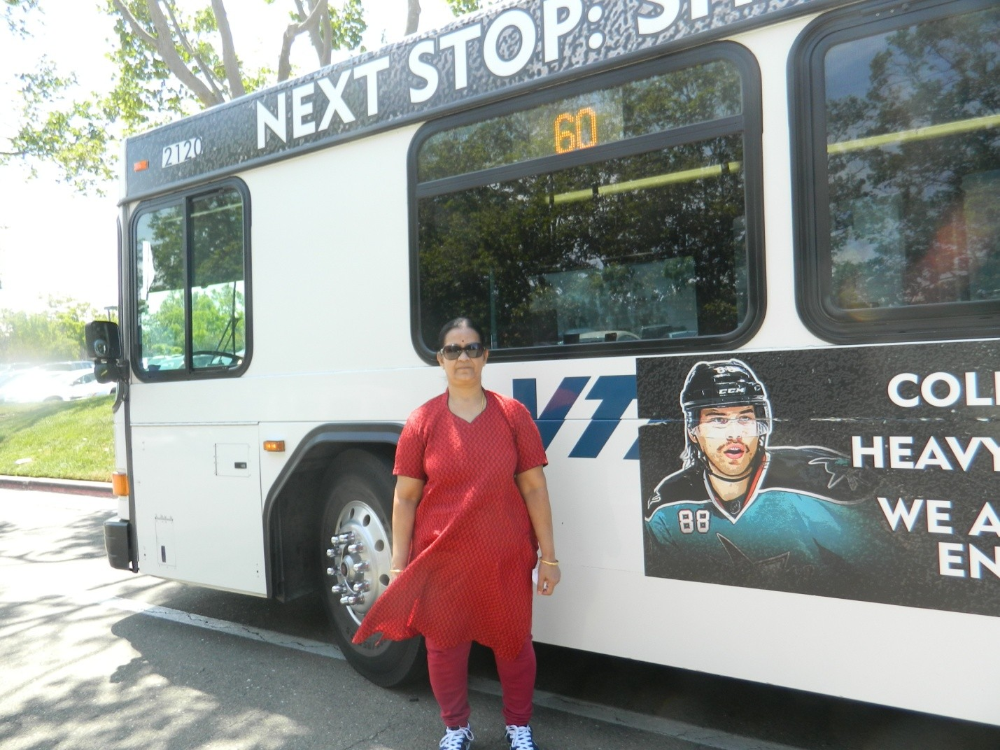
We were keen to experience the local bus service. The buses are spotlessly clean, conductor-free, and run on a flat fare of $2 regardless of distance ($1 for senior citizens). Passengers deposit the exact fare into a machine near the driver. Drivers are courteous and wait until all passengers — including wheelchair users and cyclists — are settled before moving. We travelled on two routes: to Great America and Palo Alto, both enjoyable journeys.
Cherry Picking at Brentwood
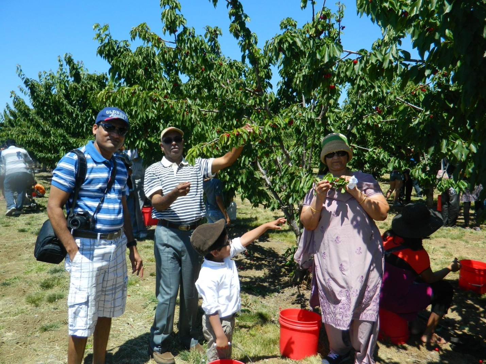
Around mid-May, fruit-picking season opens at orchards in the region. We drove about 100 km — approximately two hours — to a cherry orchard in Brentwood. Armed with plastic buckets, we spent an hour picking cherries from trees heavy with fruit, eating considerably more than we collected. We brought a packed lunch, paid for our pickings, and returned home thoroughly content.
Shiva Vishnu Temple, Livermore
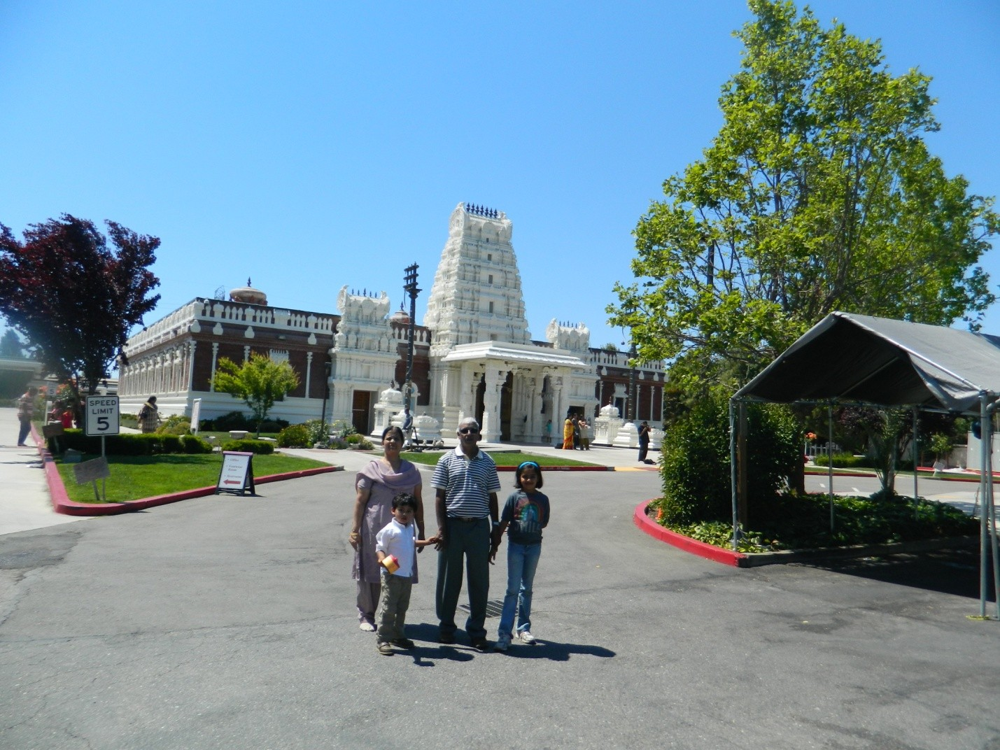
This is one of California's grandest Hindu temples, housing Ganesh, Balaji, a Shiva lingam, Ram Sita, Hanuman, and Navagraha. Funded by the generosity of wealthy Indian Americans, it stays open from morning to 8 pm without a midday break, and prasad is distributed continuously. What struck me most was seeing several Americans seated before the pandits, seeking raksha — a reminder that Hinduism's reach is wider than one might imagine.
Golden Gate Bridge & San Francisco
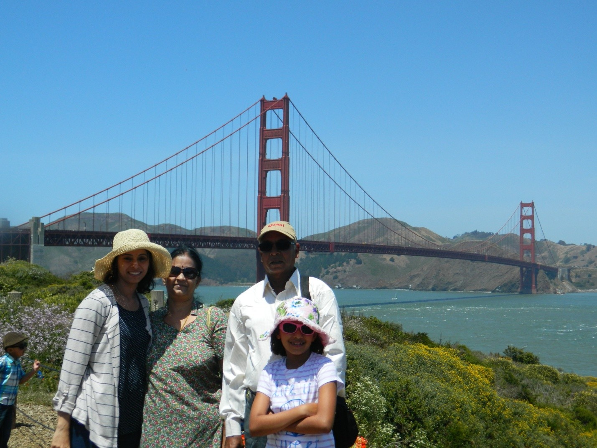
We drove the 60 miles to San Francisco, a city that reminded me of Ooty — hilly, winding roads, and a cool sea breeze off the Pacific. We navigated the steep Lombard Street, where cars inched forward in bumper-to-bumper traffic down an almost vertical slope, before reaching the Golden Gate Bridge. The bridge spans the Pacific Ocean connecting San Francisco and Sausalito, bold and unmissable in its orange colour, with no pillar in the middle. We took a 30-minute bus tour of the area and then drove down the famous crooked Lombard Street for a second look.
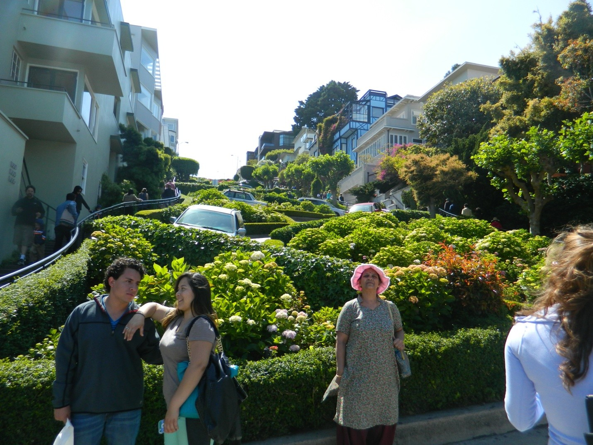
For lunch we went to Fisherman's Wharf, on the seafront, where we ate at Chipotle — layered Mexican rice with rajma, capsicum, carrot, and cheese, the go-to vegetarian meal here. We walked the full length of the wharf, watched street performers, spotted sea lions basking on the shore, and shared a $2 cup of coffee before heading home around 6 pm.
Shoreline Lake
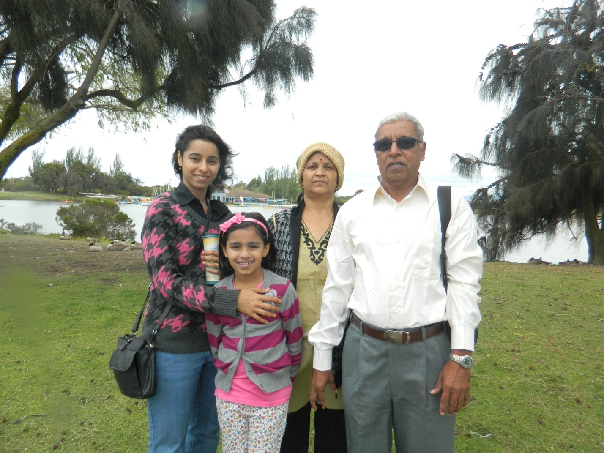
About 45 minutes from home, Shoreline Lake is a beautifully landscaped spot surrounded by trees and green lawns — and famously, the Google campus is visible on the way. We arrived with packed food and spent the day walking around the lake, watching ducks and birds, and relaxing on the grass. In the afternoon we went pedal boating — a four-seat boat that Atharv was absolutely determined to steer. After much nagging, he got his turn, and to everyone's delight, he managed it.
California Academy of Sciences, San Francisco
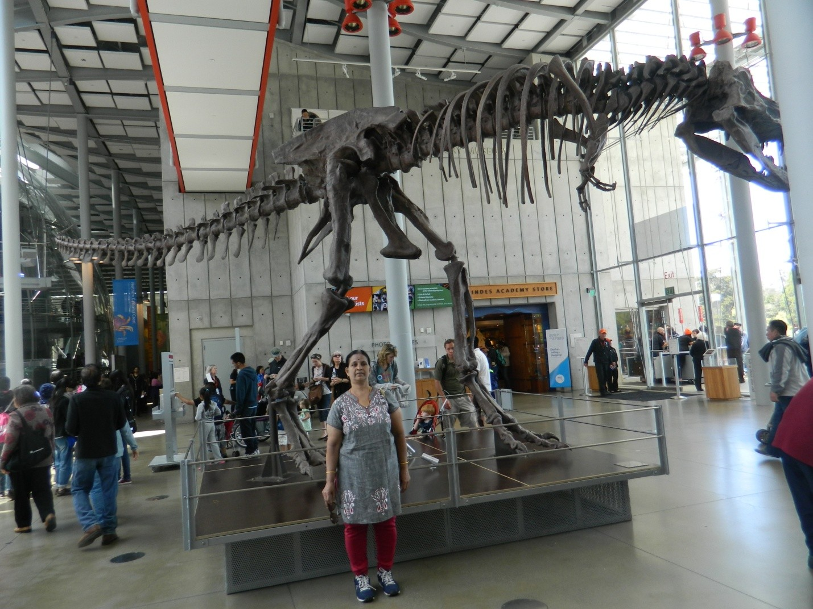
Located in Golden Gate Park, this world-class academy has three unmissable attractions. The aquarium dazzled us with its variety of fish. The planetarium screened a 30-minute show about the 1906 San Francisco earthquake — which killed 3,000 people, injured 2 lakh more, and levelled most of the city — rendered in vivid 3D that made us feel we were living through it.
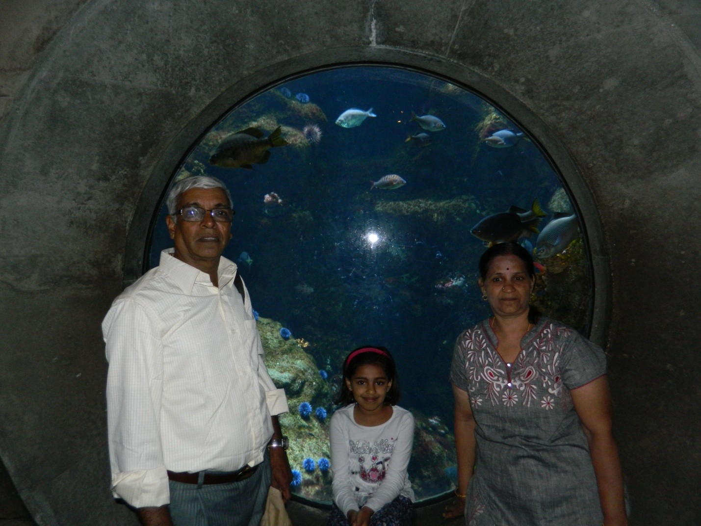
The artificial rainforest, a large enclosed dome, recreated a tropical ecosystem complete with exotic plants, butterflies, birds, insects, and snakes.
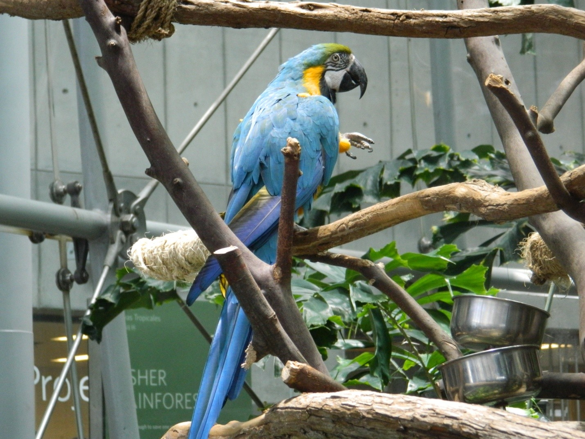
Finally, the earthquake simulator: after a short film, we stepped into a small cubicle that began to shake violently — we gripped the rails and laughed in equal measure. We lunched on packed chapattis and subji in the academy's hall before heading home.
The Mystery Spot, Santa Cruz
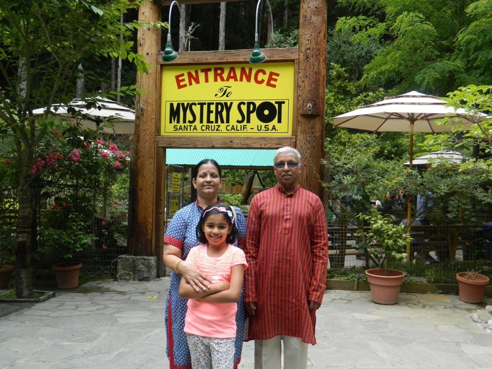
Some 50 miles from home, deep in a redwood forest of enormous trees, lies the Mystery Spot — a small area where, it is claimed, the laws of gravity behave strangely. The story goes that in 1930 a buyer tried to build a house here but found no pole or beam would stand straight. Our guide demonstrated: a ball placed on a slanted plank rolled upward, water poured on the same plank flowed uphill, and a pendulum hanging from the ceiling took a diagonal position. The most theatrical trick involved people of different heights standing on the plank — the tallest appeared shortest, the shortest tallest.
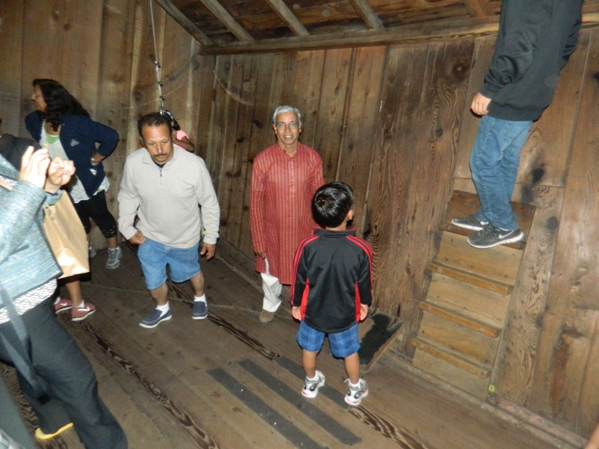
Uma looked it up afterwards: some visitors insist the forces are real and point to the slanting trees in the area as evidence; others argue it is all an elaborate set of visual illusions created by the unusual geometry of the wooden structures. Either way, we collected our free stickers — and I fully intended to display mine on our car back in Pune.
Train Journey — Caltrain to Palo Alto
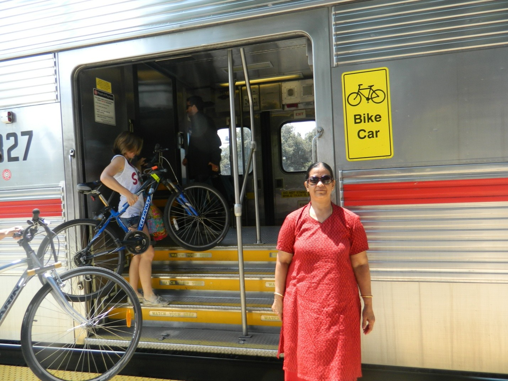
Sunnyvale has its own Caltrain station, and we were keen to try it. The California Train (Caltrain) runs from Gilroy to San Francisco — the full length of the state — divided into 7 fare zones. We bought tickets ($3 each) from a machine and rode a double-decker, spotlessly clean train from Sunnyvale to Palo Alto, both within Zone 3. The journey took about 20 minutes. At Palo Alto, close to the world-famous Stanford University, we watched students board with their bicycles — cycling to the station, loading the bike onto the train, and cycling again to campus. We wandered the main street of Palo Alto for half an hour before catching a bus back to Sunnyvale.
Pebble Beach — 17-Mile Drive
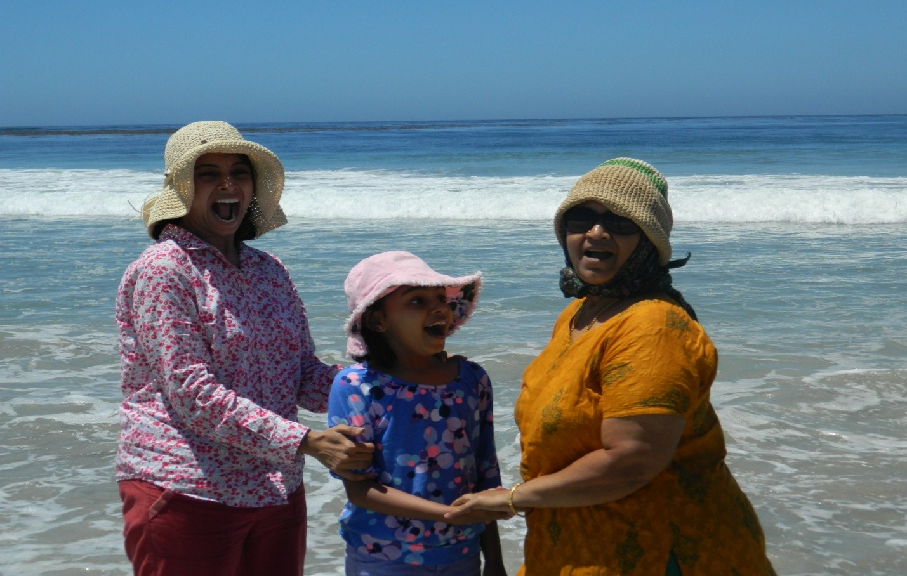
A three-hour drive south, mostly along winding coastal mountain roads with spectacular views and agricultural fields of cabbage, cauliflower, and cherry on either side. The entrance to the 17-Mile Drive costs $10 per car. The route along the Pacific coast has some 20 points of interest. Bird Rock — a sea-bound rock almost completely covered by birds — was a remarkable sight.
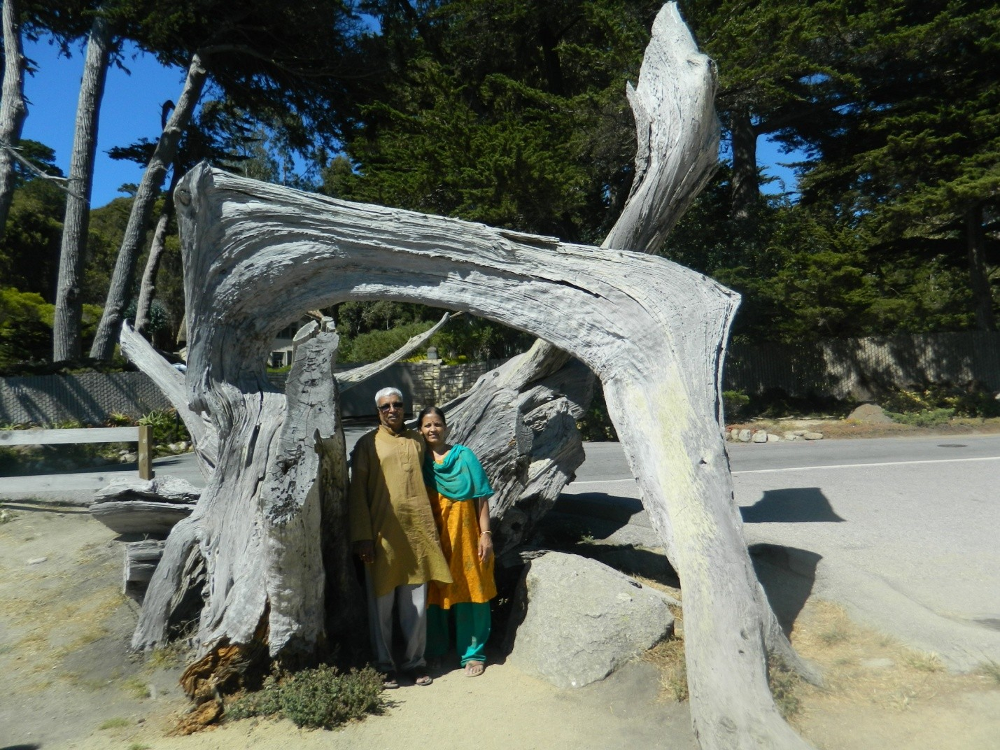
The Lone Cypress, growing in solitary defiance on a craggy cliff, is one of the most photographed trees in the world. The Ghost Tree, with its twisted pale branches, was eerie and beautiful. We used the coin-operated binoculars, marvelled at the scenery, packed a lunch, and watched American families arrive in large cars — with portable tents, barbecue kits, pets, and sometimes a motorboat in tow — to spend the entire day on the shore.
San Francisco Zoo
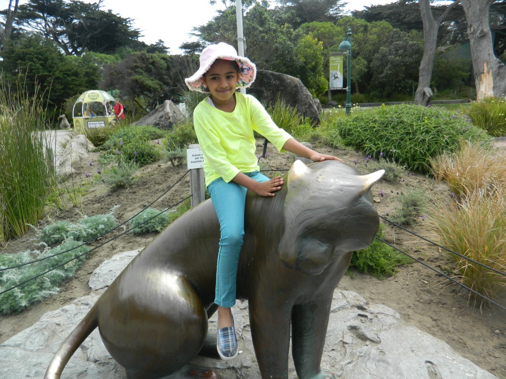
We made a full day of America's Independence Day at the San Francisco Zoo, situated close to the beach in delightfully cool, foggy weather. The zoo is spacious, with animals roaming within large, open enclosures rather than cages — tigers, zebras, rhinos, gorillas, monkeys, kangaroos, and a peacock that danced obligingly while we photographed it. A steam train circles the zoo and we rode it with the children. A lone male giraffe lived separately from the herd, we were told, because the females gave him no peace. There were also penguins, fed fish at midday, and two sea lions that had been found in the wild with bullet wounds, surgically treated, and given sanctuary. Two large birds with a single wing each — also rescued — were similarly moving. We ate our packed lunch under a cool tree, walked the artificial Africa forest exhibit, and left around 4 pm.
Nectar & Peach Picking at Tachella Farms
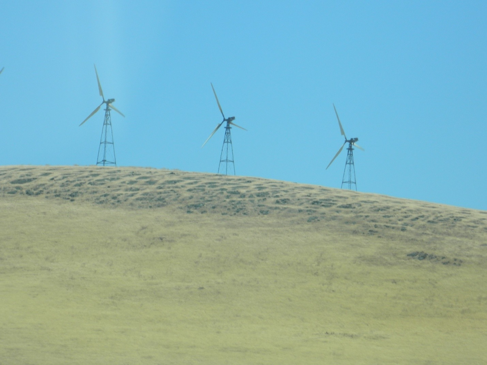
Another trip to Brentwood — this time three hours each way through barren hills dotted with wind turbines — with Shashi's friend Ashish joining us. Tachella Farms had black cherry, peaches, and nectarines for pick-your-own harvest. I saw nectarines for the first time: a large, thin-skinned, deep-red, intensely juicy fruit. The rule was simple — anything you pick, you buy, but you may eat freely as you go. We ate enthusiastically. Uma had packed methi paratha and tomato rice; Ashish contributed milk sweets.
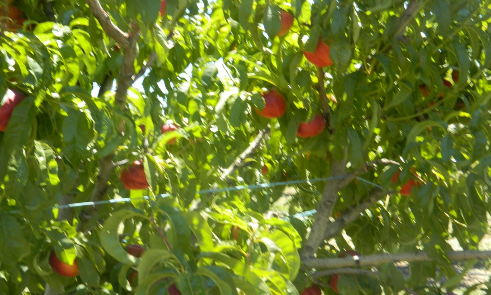
On the way back we stopped at the Shiva Vishnu Temple in Livermore for prasad, accidentally the car keys got locked in the boot. With both their phones nearly dead (5% and 2% charge), they calmly accessed Toyota's roadside helpline online. A mechanic arrived within 20 minutes, inflated a tube between the door frame to create a gap, and used a hooked rod to pop the lock open. The whole operation took less than half an hour, and Atharv kept the waiting crowd thoroughly entertained throughout.
Mount Madonna & Kim Son Monastery
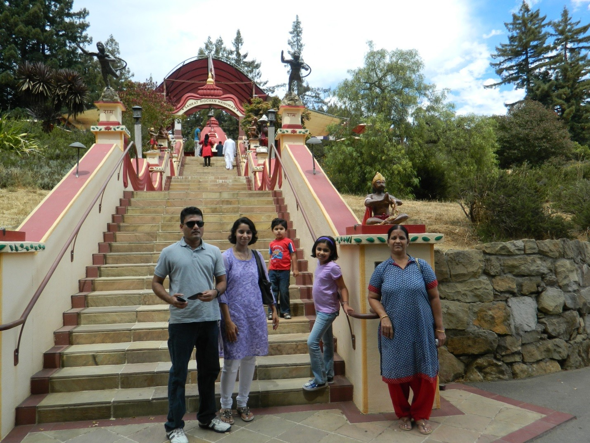
Lakshmi had heard from friends at Duck Park about the Sankat Mochan Hanuman Temple on Mount Madonna, and her desire to visit it was resolute. Uma researched the temple thoroughly, made an advance reservation (required for entry), and downloaded a map since the GPS route was unusually complex. Lakshmi, characteristically, had prepared a handwritten list of wishes to place in the temple's drop box.
We left home at 11:30 am and arrived at the temple — founded in 2003 by Indian saint Baba Hari Dass within the Mount Madonna residential centre — at around 1 pm. The temple is modest but serene, with aartis at 6:30 am and 6 pm. The pandit blessed each of us and distributed prasad. What surprised us most were a few American pandits, dressed in white dhoti and kurtha with sindoor on their foreheads, conducting the rituals as naturally as any Indian priest.
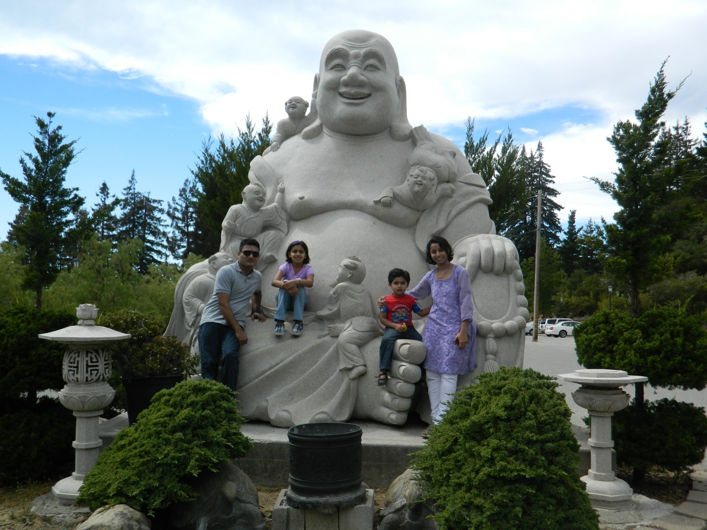
Adjacent to the temple is the Kim Son Buddhist Monastery, a meditation centre of quiet beauty. We saw a magnificent reclining Buddha and a laughing Buddha at the entrance. Inside, a group of monks in saffron robes chanted religious verses.
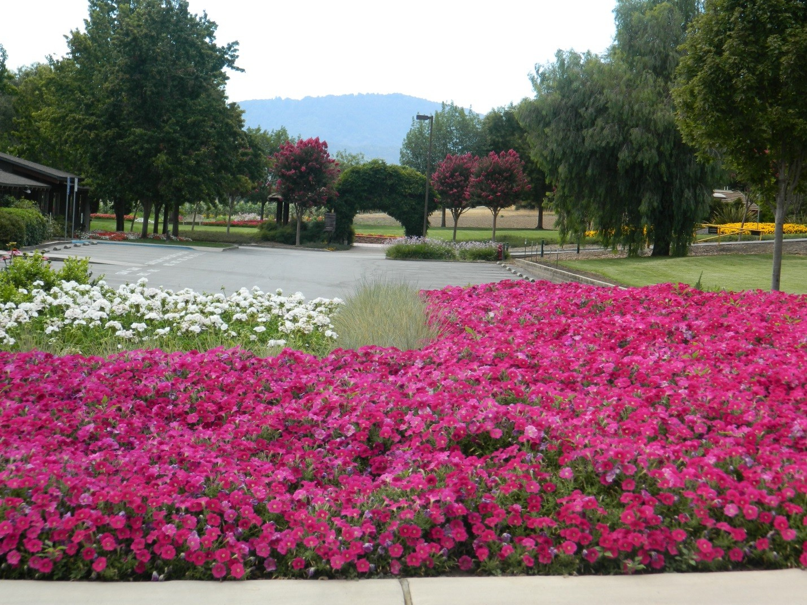
We sat with our packed methi paratha and dahi lunch in the monastery grounds, pausing to admire a beautifully stocked nursery of flowering plants on our way back.
Other Memorable Visits
SAP Labs & Stanford University — 3rd August 2013
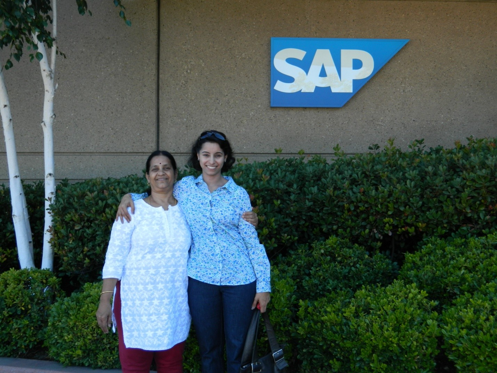
Uma took us to her office at SAP Labs in Palo Alto on a Saturday. The building had an auto-lock main door, motion-sensitive lights, and a well-stocked canteen with free coffee, tea, cold drinks, yogurt, and fruit for all employees.
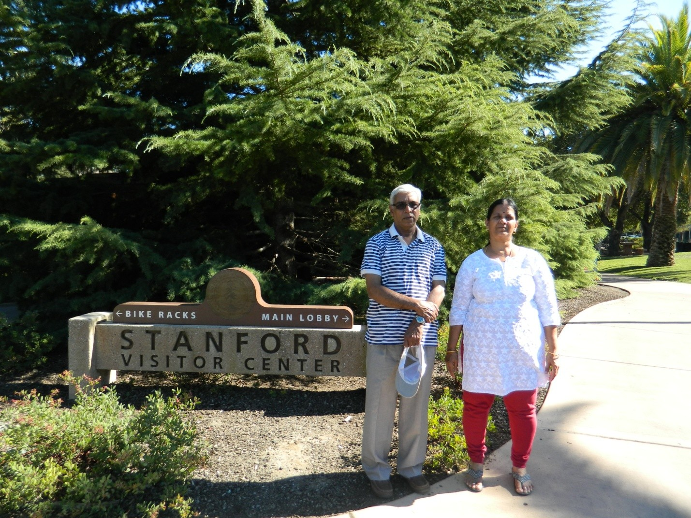
On the way back we drove through the Stanford University campus. Lakshmi scanned every signboard earnestly searching for one that said "Stanford University"; we never found one, and it remains a family joke.
Great Mall & Shopping — 4th August 2013
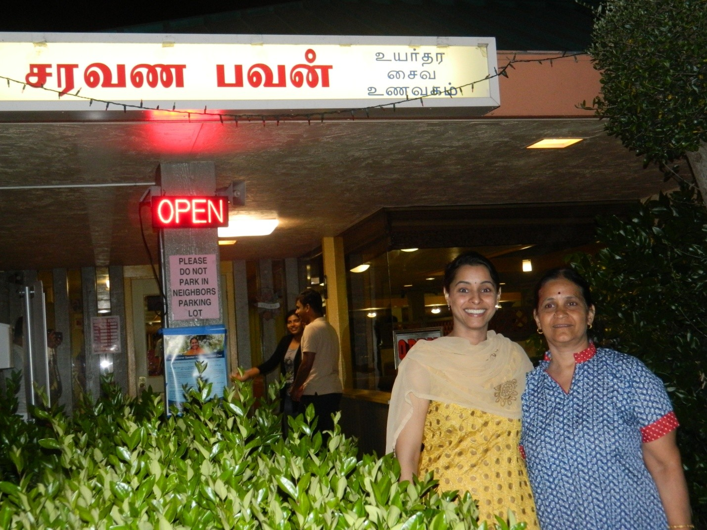
The Great Mall was enormous, with shops for clothing, electronics, cosmetics, furniture, and branded goods — Uma and Shashi had concession coupons giving 10–20% off most stores. We also visited Target, Costco (wholesale, membership required), Safeway (the quintessential American supermarket), Dollar Tree ($1 items), and India Cash & Carry — a taste of home with Indian groceries, vegetables, and spices.
Chuck E. Cheese's — 27th July 2013
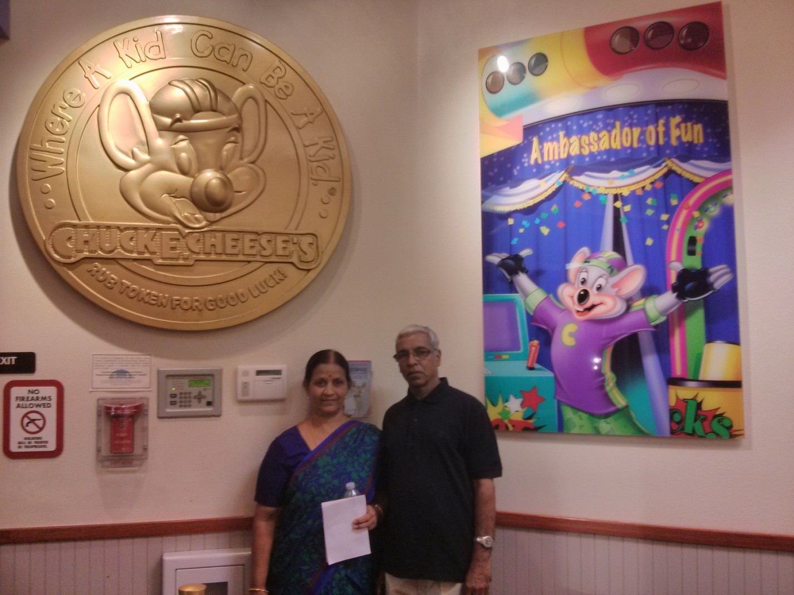
We took the children to Chuck E. Cheese's, an indoor amusement centre packed with token-operated games. Players earn points and redeem them for prizes. All four of us tried the games with equal enthusiasm and equally poor results — our combined points were enough for a tiny plastic trinket, which we accepted with great dignity.
The Return
On 3rd September we woke early to leave by 7:30 am. Atharv was visibly upset. Tanvi pressed a photo frame and some showpieces into my hands as parting gifts. At San Francisco airport, Shashi helped us redistribute weight between check-in and cabin bags — we had, predictably, over-packed — and waited with us until the security checkpoint. An overstuffed cabin bag was kindly checked through by an airhostess. At Newark, we ran to collect a bag and sprint to the Mumbai connection, a 40-minute gap, and made it, guided by helpful airport officials.
The 16-hour return flight passed smoothly. At Mumbai customs, an official asked whether I carried liquor, I said no, and he waved me past the X-ray queue entirely. We reached home in Pune by 3 am — furniture covered and dust-free, car and bike started first try after an air refill. Through our journey as well as during our entire stay, we never had a single bitter experience. The trip was good indeed.